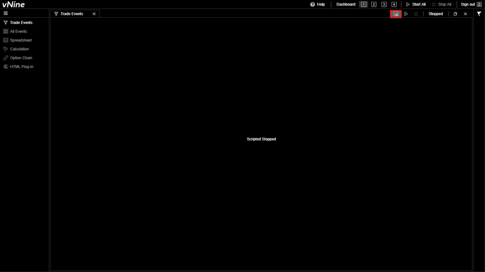
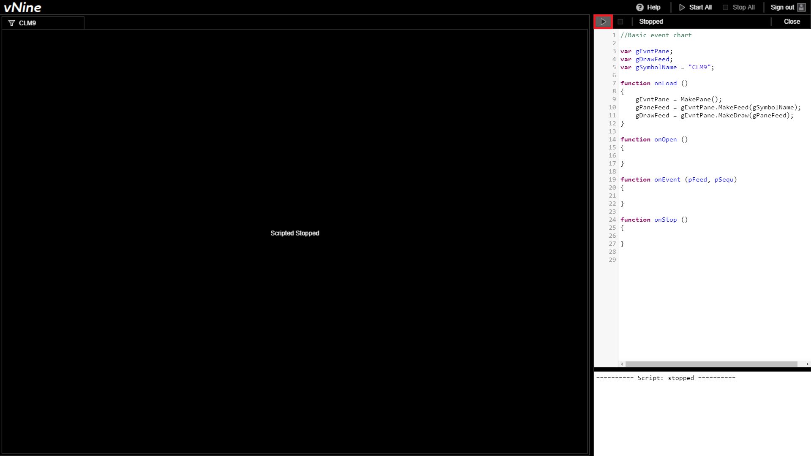
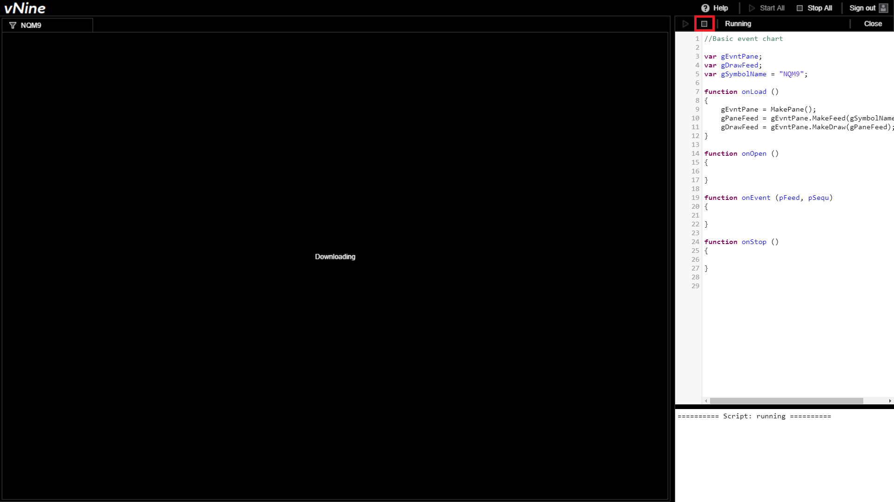

Vertex Analytics | EVNTScript
Production: vnine.vertex-analytics.com
Contact: contact@vertex-analytics.com
General product description
List of features with links to their documentation
Other resources
Documentation by Blake Boris
Manual
General Formatting
Notation
Constants used for distinguishing variable roles
k| K denotes a constant variableg| G denotes a global variable
var gEvntPane;
var gPaneFeed;
var kSymbolName = "ESM9";
Enumerated Constants
CEvntFeed.FeedStep
Constants used for CEvntFeed.FeedStep
kStepShow| Shows the event aggregating by timekStepHide| Withholds the even from the Symbol viewportkStepHalt| Shows the previous eventkStepNext| Advances the step position
gPaneFeed.FeedStep = kStepHide; //This will hide the current event in the feed
kEvent.Type
Enumerated types of events
kEvent.Type.TradekEvent.Type.BidkEvent.Type.AskkEvent.Type.ImpliedBidkEvent.Type.ImpliedAskkEvent.Type.BookReset
if (tTick.Type == kEvent.Type.Trade)
{
//Do something based on event being a trade
}
kEvent.Trade.Aggressor
Enumerated values for getting the type of aggressor of a trade event
kEvent.Trade.Aggressor.BuykEvent.Trade.Aggressor.Sell
if (tTick.Type == kEvent.Type.Trade)
{
if (tTick.Trade.Aggressor == kEvent.Trade.Aggressor.Buy)
{
//Do something based on trade's aggressor being a buyer
}
}
kEvent.Bid.Type
Enumerated values for getting the type of a bid event
kEvent.Bid.Type.NewkEvent.Bid.Type.ChangekEvent.Bid.Type.DeletekEvent.Bid.Type.DeleteThrukEvent.Bid.Type.DeleteFromkEvent.Bid.Type.OverlaykEvent.Bid.Type.Replace
if (tTick.Bid.Type == kEvent.Bid.Type.New)
{
//Do something based on bid's type being new
}
kEvent.Ask.Type
Enumerated values for getting the type of an ask event
kEvent.Ask.Type.NewkEvent.Ask.Type.ChangekEvent.Ask.Type.DeletekEvent.Ask.Type.DeleteThrukEvent.Ask.Type.DeleteFrom
if (tTick.Ask.Type == kEvent.Ask.Type.New)
{
//Do something based on ask's type being new
}
CEvntPane.Wave
Enumerated values for playing different audio files
Bang| 0Clang| 1Punch| 2Ring_1| 3Ring_2| 4Ring_3| 5Ring_4| 6Ring_5| 7Ring_6| 8Ring_7| 9Slap| 10
CEvntPane.PlayWave(0); //Plays a bang!
Tutorial: The Basics
Step 1: Pane creation
Drag a new pane into your vNine dashboard

Step 2: Opening the editor
Click the JS button to open up the Javascript-esc editor. You should be presented with an empty sample script corresponding to your new pane

Step 3: Declaring your variables
Once you've opened your Javascript editor, you should see your main CEVNTPane and CEVNTFeed variables. These are most commonly defined as gEvntPane and gPaneFeed.
var gEvntPane;
var gPaneFeed;
var kSymbolName = "ESM9";
- CEVNTPane
gEvntPane| Your pane variable allows you to create just about everything else we're going to need to make use of your script. - CEVNTFeed
gPaneFeed| Your feed variable will be used to track and make use of every single Event that has occured since the exchange last opened. - string
kSymbolName| The symbol name is the technical name of the symbol we want to interpret. A list of symbol names can be found at ____.
Step 4: Understanding onLoad
The built in onLoad function is called when the user clicks the run button shown below.
function onLoad ()
{
gEvntPane = MakePane();
gPaneFeed = gEvntPane.MakeFeed(gSymbolName);
gDrawFeed = gEvntPane.MakeDraw(gPaneFeed);
}
MakePane()| Returns a new CEVNTPane objectgEvntPane.MakeFeed(gSymbolName)| Returns a new CEVNTFeed object based on the specified symbol namegEvntPane.MakeDraw(gPaneFeed)| Returns a new CEVNTDraw object

Step 5: Understanding onOpen
The built in onOpen function is called once the pane has properly loaded and rendered the Symbol information. For now, we won't make use of this function, but it is important to know what it does for the future.
function onOpen ()
{
}
Step 6: Understanding onEvent
The built in onEvent function is called once for each timestamp you play back. For now, we won't make use of this function, but it is important to know what it does for the future.
function onEvent (pFeed, pSequ)
{
}
pFeed| Parameter: Your CEVNTFeed object with timestamps measured in nanoseconds with 56 bit precisionpSequ| Parameter: An integer that defaults to 0 that is used for Amount of events within this sequence
Step 7: Understanding onStop
The built in onStop function is called when the user clicks the stop button shown below. For now, we won't make use of this function, but it is important to know what it does for the future.
function onStop ()
{
}

Results
Congratulations
At this point, you should see a chart based off of your selected Symbol for the most recent exchange period like the one shown below! Feel free to zoom in and out and scroll through your newly created chart.

Troubleshooting
For certain periods throughout the day, EVNTScript will not be able to generate charts. This is because the vNine platform makes use of the time in which the exchange is down to process and archive data. Below is a chart containing weekly hours of downtime.
| Monday | Tuesday | Wednesday | Thursday | Friday | Saturday | Sunday |
|---|---|---|---|---|---|---|
| 4:00pm-5:00pm | 4:00pm-5:00pm | 4:00pm-5:00pm | 4:00pm-5:00pm | 4:00pm- | - | -5:00pm |
Also, please note that some contracts also stop the exchange from 3:15pm-3:30pm on weekdays.
Contact
If you come across any major issue/bugs, please let us know by sending an email with an explanation of what occured to contact@vertex-analytics.com.
Additionally, if there is something that you think we could improve about this documentation, please create a new issue at our repository's issues page.